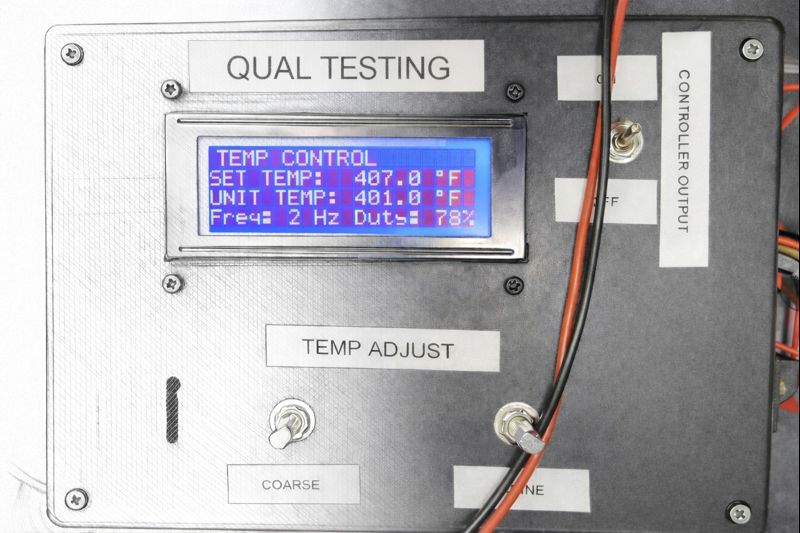
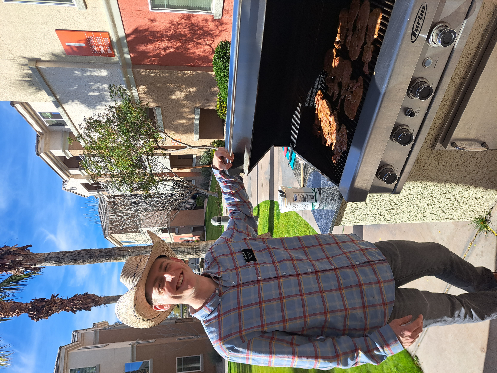
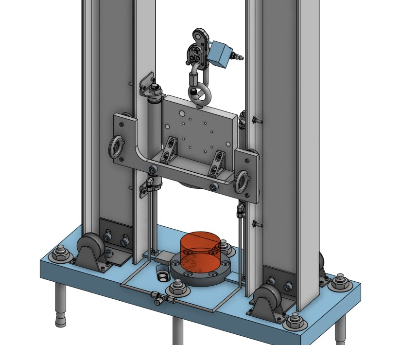
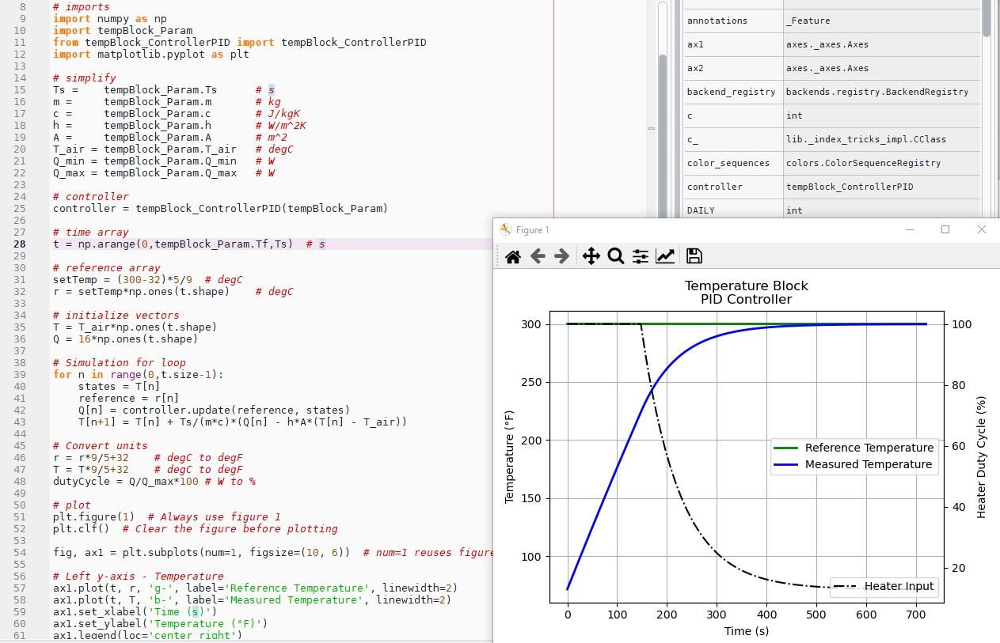
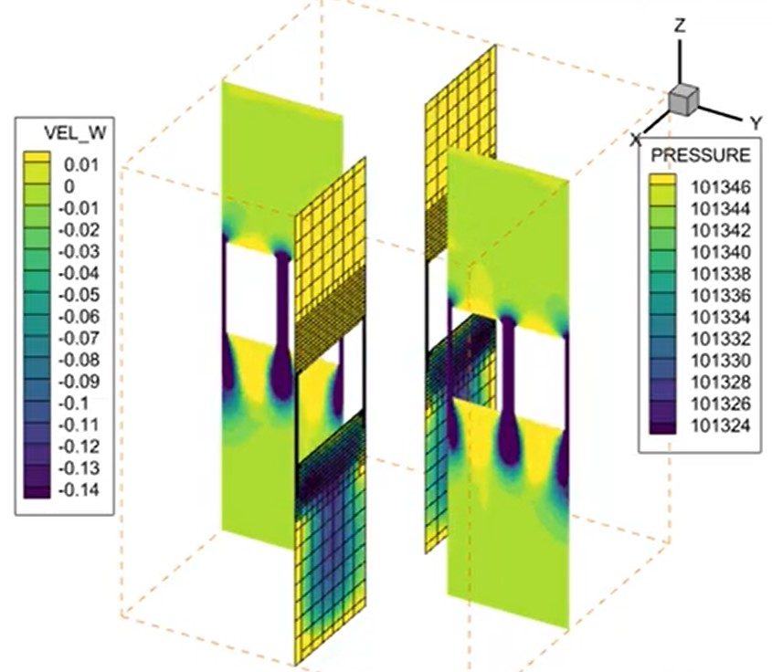
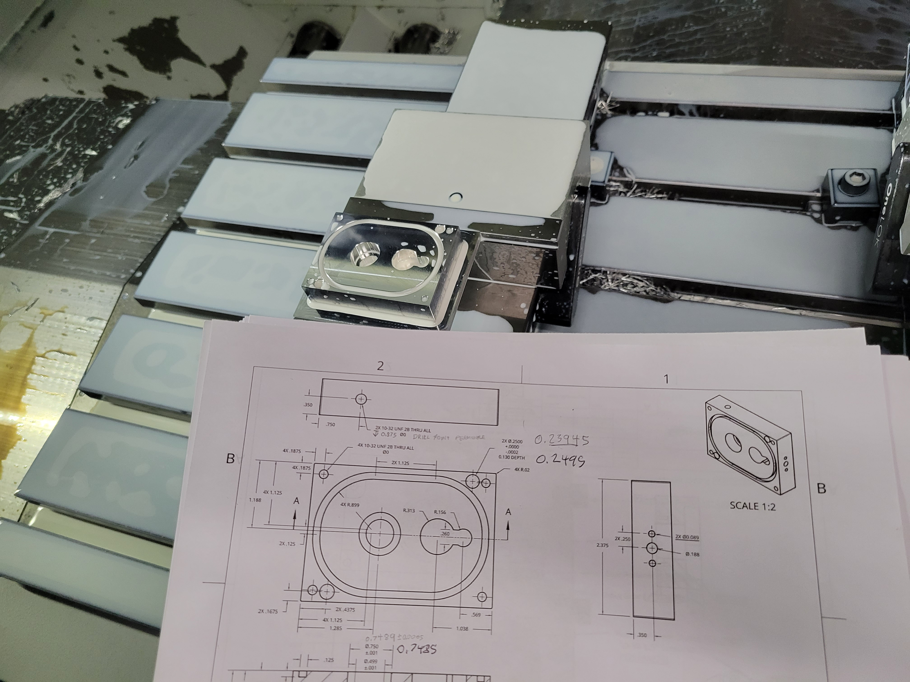

Hi! I'm Tyson
INTEGRITY - PASSION - DILIGENCE

INTEGRITY - PASSION - DILIGENCE

EIT
Graduating Spring 2026
ABET accredited school
From concept to validation
Engineering is more than a job to me. From a young age, I was drawn to understanding how the technologies around me worked and how they could be improved. Early exposure to manufacturing and programming sparked that curiosity. Whether it was using radios to communicate during skiing trips or being fascinated by the mechanics of a four-wheeler transmission that could shift gears with a simple movement of my heel, I was constantly learning through observation and experience.
Working summers building homes further shaped my interest in engineering. Hands-on construction taught me the practical application of mechanical principles and deepened my appreciation for the design process behind functional structures. Seeing plans come to life in the field reinforced my interest in how thoughtful engineering directly impacts the way people live and work.
By the time I graduated high school, pursuing mechanical engineering was a natural decision. My academic experience challenged me with complex, hands-on projects that strengthened my critical thinking and creative problem-solving skills. Through internships, I gained valuable experience teaching manufacturing processes to freshman students, which sharpened both my technical understanding and my ability to communicate complex concepts clearly.
These experiences also broadened my exposure to a wide range of engineering disciplines, including programming, pneumatic and hydraulic systems, thermodynamics, design for manufacturing and assembly, and professional technical communication. Each opportunity reinforced my passion for engineering and equipped me with skills essential to success in industry.
Today, I am motivated to apply what I have learned in a professional setting. I am eager to contribute my technical abilities, hands-on experience, and strong work ethic to industry while continuing to grow as an engineer.
Outside of engineering, I'm usually outdoors camping, reading autobiographies, or getting involved in whatever sport I can find. Saturdays are my favorite—I fire up the grill for carne asada and roll tortillas by hand with my wife, Lydia, for any neighbors who follow the scent to our backyard.

CAD modeling experience (with SolidWorks, OnShape, & Fusion360) using DFM/DFA principles


Python, MATLAB, LabVIEW, C++ experience building automation, data measurement, & controller tools
Ansys FEA, SolidWorks FEA, & Converge CFD modeling to validate structural, thermal, pneumatic/hydraulic requirements and optimize performance


CNC mill, manual mill & lathe, 3D printing manufacturing experience from prototype to production
Apply engineering expertise to develop solutions that improve quality of life and create lasting positive impact in the communities I serve
Grow into a leadership position where I can mentor teams, drive innovation, and guide strategic technical decisions
Develop deep expertise in instrumentation and controls engineering to become a trusted specialist in automation and measurement systems